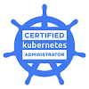

Akilan Subramanian
DevOps | Kubernetes | AWS | Python | Golang
Email - akilan.468@gmail.com
Mobile - +91 9738840498
Skills
Certifications
Education
Bachelor of Engineering
Electronics and Communication Engineering - 2005-2009
Anna University, Chennai, India
Work Summary
- 11+ years of experience in analysis, design, development, build, test, release, deployment and managing various web and micro service applications.
- Expertise in DevOps and has worked in multiple complex DevOps engagement which involved using various tools, platforms, environments
- Strong experience in different tools like Docker,Kubernetes, Ansible, Terraform, Azure DevOps, Jenkins, Prometheus, Grafana, Vagrant, SonarQube, Istio, LinkerD
- Good in Shell scripting, PHP, Python, NodeJS, Golang,Linux, MySQL, MongoDB, ReactJS, Redis, HTML5, CSS3, JS, Bootstrap, JSON, YAML, API
- Experienced in public cloud services like AWS, Google Cloud
- Strong knowledge in developing, deploying and managing front end web applications using JS frameworks such as Angular, ReactJS and backend applications using PHP, Python, NodeJS, Java.
Work Experience
Principal Software Engineer [DevOps] - 02/2022 to till now, Oracle india pvt ltd, Bangalore,
India
Technology Architect [DevOps] - 07/2021 to 02/2022, Infosys, Bangalore,
India
Technology Lead [DevOps] - 01/2019 to 07/2021, Infosys, Bangalore,
India
Technology Analyst [DevOps] - 05/2015 to 01/2019, Infosys, Bangalore,
India
Senior Software Engineer - 01/2013 to 05/2015, Tismo Technologies,
Bangalore,India
PHP developer - 10/2011 to 01/2013, SilverZone,
Bangalore,India
Project Experience
- DowJones – AWS Platform : Migrated more than 20 web services from On-premises to AWS cloud using Docker, AWS ECS, ALB, EC2, Terraform, Jenkins, Bash, Python etc.
- BP – MuleOps Platform [ London, UK]: Implemented CICD solutions for MuleSoft based APIs On 3 different platforms [ On-premises, CloudHub, RTF] using OpenShift, Azure DevOps service, Python, Bash Script etc.
- BMW – Database as a Service: Implemented CICD solutions for Openshift based Database as a service [ PostgreSQL, MongoDB, Elastic Search etc.] solution using Jenkins, Groovy, Docker, Yahoo cloud serving Benchmark(YCSB), Python, AWS S3 etc.
- Infosys McCamish: Implemented CICD solution for Docker based micro service application involves Angular, NodeJS, Spring Boot stack using Maven, Junit, Jenkins, Angular CLI, SonarQube, Groovy, Kubernetes. Created CICD POC solution for both Docker Swarm and Kubernetes orchestration
- Daimler IBM IIB: Implemented CICD solution for IBM IIB based application and Angular using Maven, SonarQube, Junit, SoapUI, Jenkins, PowerShell script.
- Owlet Streetlight system: Created web based streetlight control system using PHP, Python, MySQL, CSS, JavaScript, JQuery, Google maps API, Time and Date API, Linux, IOT system API etc.
- Infosys DevOps COE: Involved CI/CD implementation, Maturity Assessment, CI/CD showcasing, Client Solution discussion